UX/UI 면접관
업무 UI와 구현 경험은 읽힙니다. 반복 문구·작은 비교 화면·상태 라벨 오류를 먼저 정리해야 합니다.
실제 새 원본 01–26쪽을 기준으로 제목·설명·화면·상태를 맞췄습니다. 각 페이지에서 원본, 바로 붙여 넣을 수정 문구, 수정 이유, 배치 지시, 면접 질문을 함께 확인할 수 있습니다.
배포된 두 사례, B2B 정보 구조, 퍼블리싱 경험은 강점입니다. 현재본에는 설명문 복사 오류와 편집 지시가 남고, 일부 캡션이 화면의 증거 범위보다 큽니다. 문구를 맞추면 읽기와 신뢰가 좋아지지만 구체적인 협업·재사용 자료는 추가 보강이 필요합니다.
업무 UI와 구현 경험은 읽힙니다. 반복 문구·작은 비교 화면·상태 라벨 오류를 먼저 정리해야 합니다.
업무별 정보 구조와 배포 경험이 있습니다. 문제의 출처, 대안 선택의 제약, 실제 협업 한 건이 더 필요합니다.
TBM을 현장 안전 점검 일지로 풀고 페이지마다 ‘무엇을 보여주는지’를 설명하면 흐름을 이해하기 쉽습니다.
실제 채용 결과나 합격 확률이 아닌 검토 판단입니다. 특정 회사의 합격·연봉을 보장하는 자료는 아닙니다.
통합 플랫폼→TBM→ERP→공통 UI 순서, 07쪽 번호 대응, 08쪽 대안 비교, ERP 미사용·인트라넷 미배포 표기를 유지합니다. 24쪽 결재선 오타 수정과 25쪽 작업 생성 캡션 수정도 확인했습니다.
현재 폴더는 PNG 26장입니다. 이번 검토는 페이지 내용과 배치에 대한 검토이며 실제 서비스 동작·최종 PDF 링크·특허·성과 지표를 독립 검증한 결과는 아닙니다. 수정 HTML은 설명용 초안입니다.
2026-10-10에 읽을 수 있었던 공고를 참고했습니다. 공고 게시일과 모집 지속 여부는 확정하지 않았으며 국내 채용시장 전체를 일반화하지 않습니다.
| 페이지 | 추가할 실제 자료 | 현재 쓸 수 있는 설명 |
|---|---|---|
| 10·15 | 실제 요청·제약·본인 선택·변경 화면 한 건 | 협업 범위, 배포와 실제 사용 |
| 19 | 동일 ERP의 전달 자료 | UI 기준과 퍼블리싱 범위 |
| 21 | 토큰을 참조한 스타일과 적용 UI | 컬러 변수 정의와 웹 가이드 |
| 22 | 기본/적용 UI와 변경 치수·이유 | 입력 상태 가이드와 일부 요소 사용 경험 |
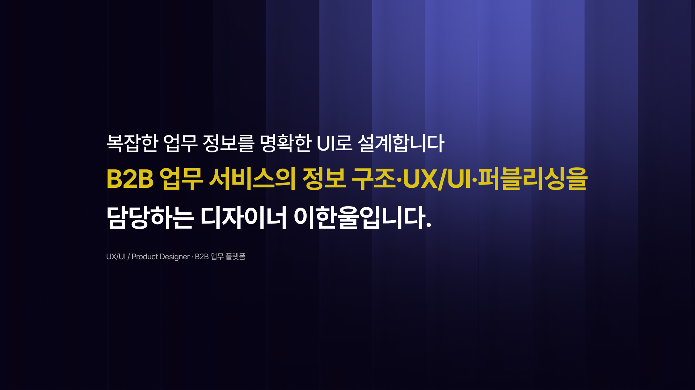
제목 복잡한 업무 정보를 명확한 UI로 설계합니다
제목 아래 B2B 업무 서비스의 정보 구조·UX/UI·퍼블리싱을 담당하는 디자이너 이한울입니다.
복잡한 업무 정보를 찾고 쓰기 쉬운 화면으로 설계합니다.
B2B 업무 서비스의 정보 구조와 UX/UI를 설계하고, HTML·CSS·SCSS 퍼블리싱까지 연결하는 디자이너 이한울입니다.
통합 관리 플랫폼 · 현장 안전 기록 · 비용·인원 대시보드
정보 구조 → 화면 설계 → 퍼블리싱
제목은 왼쪽 2줄. 소개와 이름은 그 아래. 노란색은 한 단어나 이름에만 사용한다. 실제 UI를 넣는다면 플랫폼 화면 한 장만 작게 배치한다.
복잡한 업무 정보 중 무엇을 어떻게 단순하게 만들었나요?
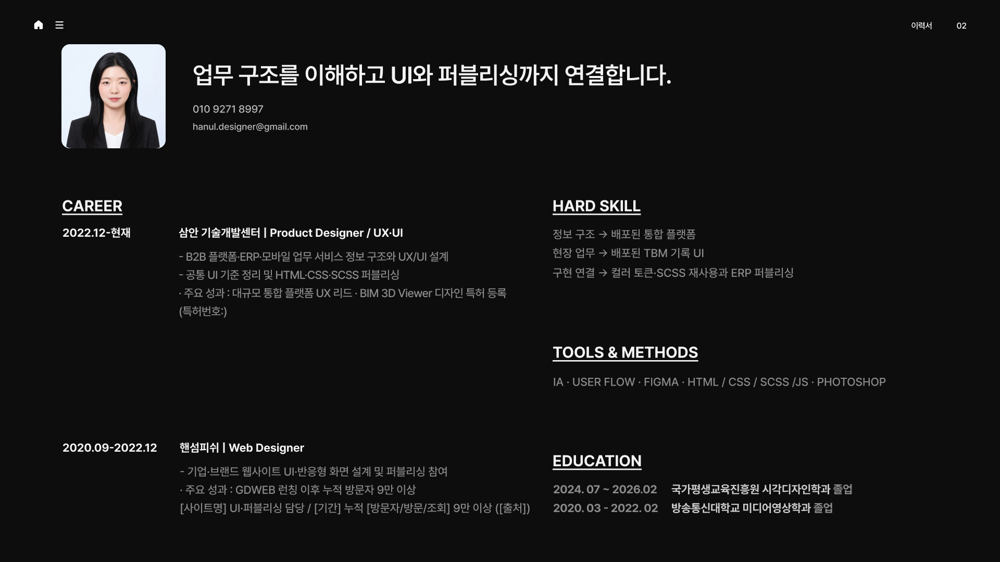
제목 업무 구조를 이해하고 UI와 퍼블리싱까지 연결합니다.
제목 아래 연락처만 배치되어 있고 경력을 소개하는 설명문은 없음
업무 구조를 이해하고, UI와 구현을 연결합니다.
2022년 12월부터 B2B 업무 서비스의 정보 구조·화면 설계·퍼블리싱을 담당했습니다. 이전에는 기업·브랜드 웹사이트의 UI와 반응형 화면을 제작했습니다.
B2B 플랫폼·ERP·모바일 업무 서비스의 UX/UI 설계 공통 UI 기준과 HTML·CSS·SCSS 퍼블리싱
기업·브랜드 웹사이트 UI 제작 반응형 화면 설계와 퍼블리싱 참여
정보 구조 · 화면 흐름 · UI 디자인 · 퍼블리싱 Figma · HTML · CSS · SCSS · JavaScript · Photoshop
좌측 60%는 경력 두 행, 우측 40%는 역량·도구·확인된 학력. 초안은 미확인 학력을 생략했다. 이름과 이메일은 상단에 작게 배치한다.
팀의 결과에서 본인이 결정하고 제작한 부분은 어디까지인가요?
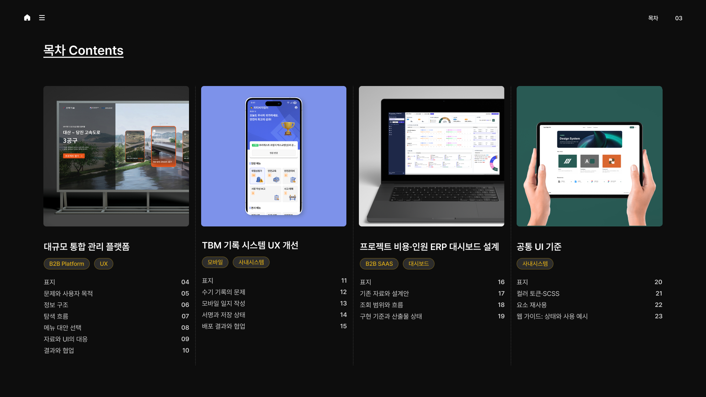
제목 목차 Contents
제목 아래 별도 설명문 없음
업무 구조에서 화면과 구현까지
배포된 플랫폼과 현장 기록 서비스를 먼저 소개합니다. 이어서 ERP 설계·퍼블리싱과 공통 UI 재사용 경험을 보여드립니다.
지도와 공통 메뉴로 현장 자료 탐색 · 배포 후 실사용
종이 일지를 웹·모바일 입력으로 전환 · 배포 후 실사용
조회 범위와 대시보드 설계 · 웹 설계안 최종 미사용
컬러 토큰·SCSS·일부 UI 요소 재사용
팀 내부 모바일 설계 · 개인 칸반 프로토타입
네 대표 사례를 2×2 카드 또는 4행으로 배치한다. 큰 장치 목업을 줄이고 페이지 범위·설계 주제·상태를 먼저 읽히게 한다.
가장 자신 있게 설명할 두 사례는 무엇인가요?
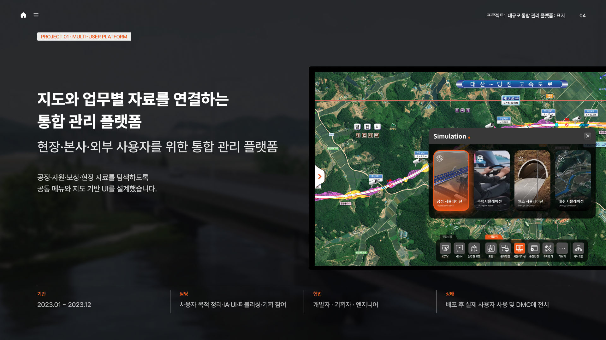
제목 지도와 업무별 자료를 연결하는 통합 관리 플랫폼
제목 아래 공정·자원·보상·현장 자료를 탐색하도록 공통 메뉴와 지도 기반 UI를 설계했습니다.
지도와 업무 자료를 연결한 통합 관리 플랫폼
현장·본사·외부 사용자가 필요한 자료를 찾도록 공통 메뉴와 지도 중심 화면을 설계했습니다. 정보 구조·UI·퍼블리싱을 담당했으며, 배포 후 실제 사용자가 이용했습니다.
2023.01–2023.12
사용자 목적 정리 · 정보 구조 · UI · 퍼블리싱 · 기획 참여
개발자 · 기획자 · 엔지니어와 협업 배포 후 실사용 · 전시 활용
왼쪽 제목·설명 45%, 오른쪽 평면 UI 55%. 표지 하단에 기간/담당/협업·상태 세 항목을 맞춘다.
서로 다른 사용자에게 같은 메뉴를 제공한 이유는 무엇인가요?
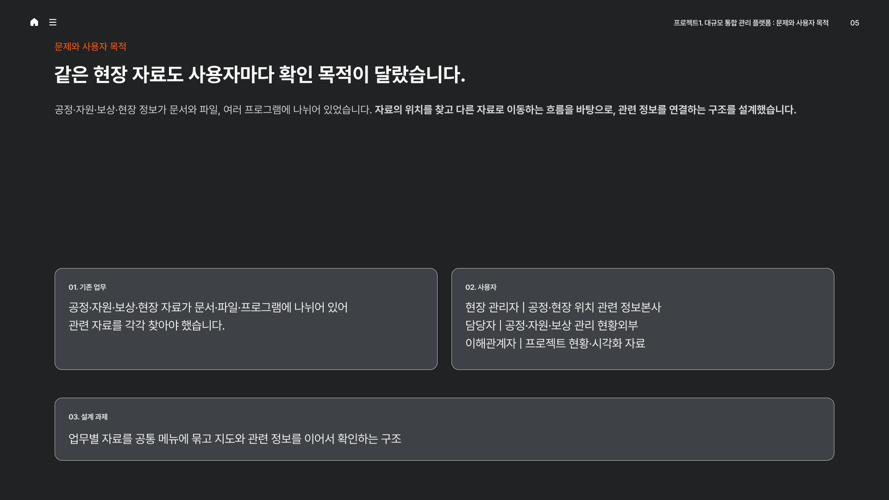
제목 같은 현장 자료도 사용자마다 확인 목적이 달랐습니다.
제목 아래 공정·자원·보상·현장 정보가 문서와 파일, 여러 프로그램에 나뉘어 있었습니다. 자료의 위치를 찾고 다른 자료로 이동하는 흐름을 바탕으로, 관련 정보를 연결하는 구조를 설계했습니다.
흩어진 현장 자료를 업무 목적에 따라 정리했습니다.
현장·본사·외부 사용자는 같은 자료도 서로 다른 목적으로 확인했습니다. 파일과 프로그램별로 나뉜 자료를 업무 단위로 묶는 것을 설계 과제로 삼았습니다.
공정·자원·보상·현장 자료를 파일과 프로그램에서 각각 찾아 확인
공정과 현장 위치에 관련된 정보 확인
공정·자원·보상 관리 현황 확인
프로젝트 현황과 시각화 자료 확인
공통 메뉴에서 업무를 선택하고 지도와 관련 자료를 이어서 확인
왼쪽 기존 업무 1개, 오른쪽 사용자별 목적 3행, 하단 설계 과제 1줄. 카드 시작을 y=350 근처로 올린다.
자료가 나뉘어 있다는 사실은 어떤 업무 자료에서 확인했나요?
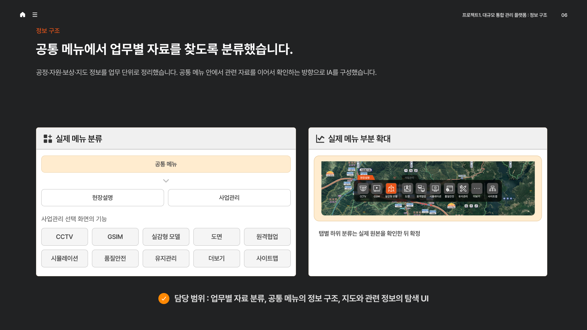
제목 공통 메뉴에서 업무별 자료를 찾도록 분류했습니다.
제목 아래 공정·자원·보상·지도 정보를 업무 단위로 정리했습니다. 공통 메뉴 안에서 관련 자료를 이어서 확인하는 방향으로 IA를 구성했습니다.
현장 설명과 사업 관리의 공통 메뉴를 구성했습니다.
공통 메뉴를 현장 설명과 사업 관리로 나누고, 관련 기능으로 접근하도록 구성했습니다. 아래 기능은 현재 캡처에서 확인되는 메뉴 항목입니다.
현장 설명 / 사업 관리
CCTV · GSIM · 실감형 모델 · 도면 · 원격협업 시뮬레이션 · 품질안전 · 유지관리 · 더보기 · 사이트맵
업무별 자료 분류 · 공통 메뉴의 정보 구조 · 지도와 관련 정보의 탐색 UI
왼쪽 공통 메뉴와 확인되는 기능 목록, 오른쪽 메뉴 부분 확대. 현재 캡처로 확인되지 않은 탭별 하위 분류는 그리지 않는다.
현장 설명과 사업 관리의 기능은 어떤 기준으로 나뉘나요?
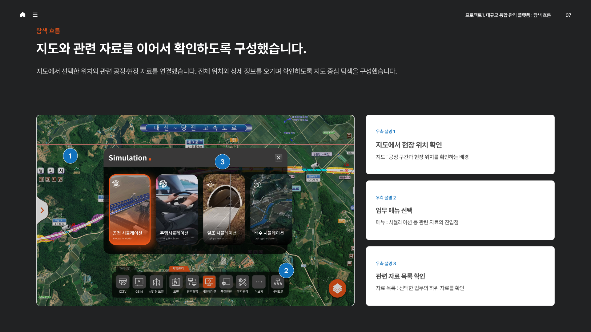
제목 지도와 관련 자료를 이어서 확인하도록 구성했습니다.
제목 아래 지도에서 선택한 위치와 관련 공정·현장 자료를 연결했습니다. 전체 위치와 상세 정보를 오가며 확인하도록 지도 중심 탐색을 구성했습니다.
지도에서 업무 메뉴와 관련 자료로 이어집니다.
지도로 공정 구간과 현장 위치를 확인하고, 하단 메뉴에서 업무를 선택하도록 구성했습니다. 시뮬레이션을 선택하면 관련 자료 유형을 확인할 수 있습니다.
공정 구간과 현장 위치를 확인하는 배경
시뮬레이션 등 필요한 기능으로 이동하는 진입점
공정·주행·일조·배수 시뮬레이션 항목 확인
왼쪽 UI 65%, 오른쪽 번호 설명 35%. 번호3은 모달 제목보다 자료 카드 영역에 붙인다. 하단에 지도 → 메뉴 → 자료 유형 흐름을 적는다.
지도를 유지하면서 메뉴를 여는 것이 사용자에게 어떤 이점이 있나요?
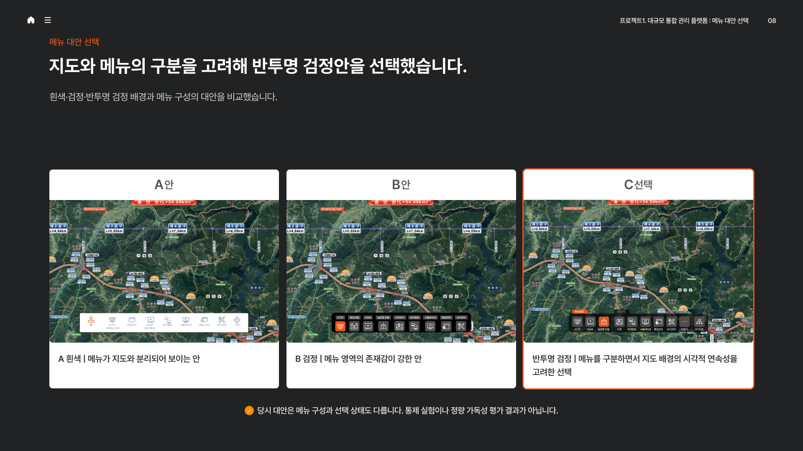
제목 지도와 메뉴의 구분을 고려해 반투명 검정안을 선택했습니다.
제목 아래 흰색·검정·반투명 검정 배경과 메뉴 구성의 대안을 비교했습니다.
메뉴를 구분하면서 지도가 이어 보이는 안을 선택했습니다.
흰색·검정·반투명 검정 메뉴를 검토했습니다. 메뉴의 구분과 지도 배경의 연속성을 함께 고려해 반투명 검정안을 선택했습니다.
메뉴 경계는 선명하지만 지도와 분리되어 보임
메뉴 영역의 존재감이 강하게 드러남
메뉴를 구분하면서 지도 배경의 연속성을 고려
상단 3개 메뉴 확대를 같은 크기로 배치한다. 하단에 기준/안별 차이/선택을 3행으로 정리한다. 필요하면 전체 지도는 작게 보존한다.
이 안을 선택하면서 포기한 점은 무엇이고 가독성은 어떻게 확인했나요?
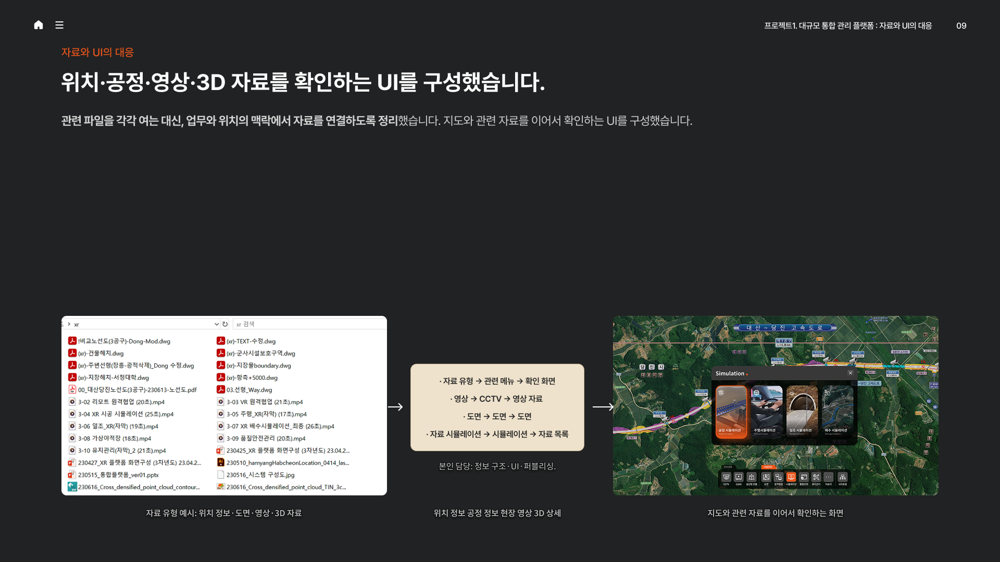
제목 위치·공정·영상·3D 자료를 확인하는 UI를 구성했습니다.
제목 아래 관련 파일을 각각 여는 대신, 업무와 위치의 맥락에서 자료를 연결하도록 정리했습니다. 지도와 관련 자료를 이어서 확인하는 UI를 구성했습니다.
자료 유형에 맞는 메뉴 진입점을 정리했습니다.
도면·영상·3D 자료의 유형과 화면 메뉴를 대응해 정리했습니다. 이 페이지는 자료 탐색을 위한 정보 구조와 UI 구성을 보여줍니다.
도면 메뉴로 접근
시뮬레이션 메뉴에서 자료 유형 확인
실감형 모델 메뉴로 접근
자료 분류 · 정보 구조 · UI · 퍼블리싱
자료 유형–메뉴–UI 진입점 3행으로 재구성하고 실제 화면 1장을 오른쪽에 둔다. 파일 목록은 대표 파일명만 확대한다.
자료 분류와 실제 데이터 연동 중 본인이 맡은 부분은 무엇인가요?
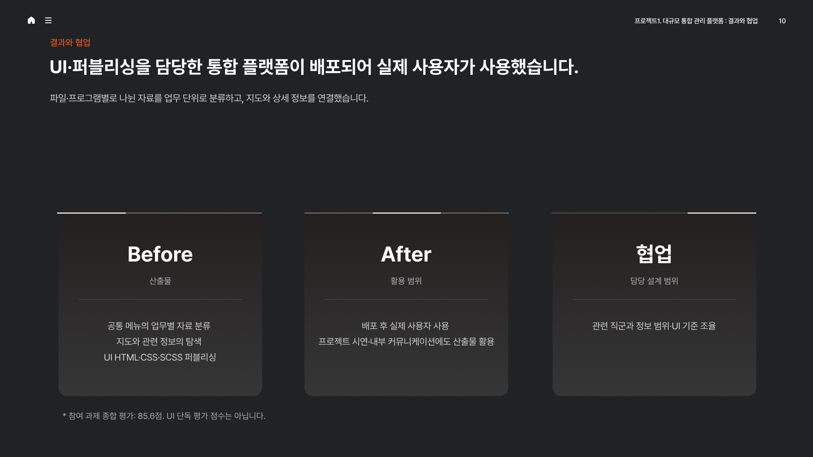
제목 UI·퍼블리싱을 담당한 통합 플랫폼이 배포되어 실제 사용자가 사용했습니다.
제목 아래 파일·프로그램별로 나뉜 자료를 업무 단위로 분류하고, 지도와 상세 정보를 연결했습니다.
설계와 퍼블리싱을 담당한 플랫폼이 실제 사용으로 이어졌습니다.
공통 메뉴·지도 중심 탐색 UI를 설계하고 HTML·CSS·SCSS로 퍼블리싱했습니다. 관련 직군과 정보 범위와 UI 기준을 조율했으며, 배포된 플랫폼은 실제 사용자가 이용했습니다.
업무별 자료 분류 지도와 관련 정보의 탐색 UI HTML·CSS·SCSS 퍼블리싱
배포 후 실제 사용자 이용 프로젝트 시연과 내부 소통에 산출물 활용
개발자·기획자·엔지니어와 정보 범위와 UI 기준 조율
3개 카드의 첫 줄을 왼쪽 정렬. 각 카드 내용은 3줄 이내. 협업 증거가 확보되면 세 번째 카드에 관련 UI 부분 확대를 넣는다.
협업 과정에서 실제로 의견이 달랐던 한 건과 본인의 판단을 설명해 주세요.
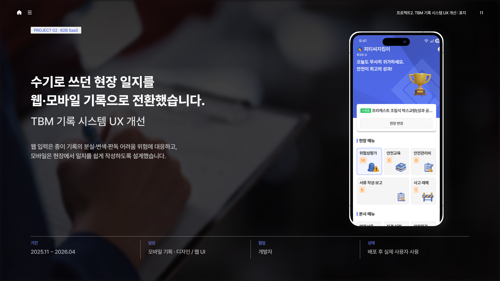
제목 수기로 쓰던 현장 일지를 웹·모바일 기록으로 전환했습니다.
제목 아래 웹 입력은 종이 기록의 분실·변색·판독 어려움 위험에 대응하고, 모바일은 현장에서 일지를 쉽게 작성하도록 설계했습니다.
현장 안전 점검 일지를 웹·모바일 기록으로 전환했습니다.
작업 전 안전 점검을 기록하는 TBM 일지를 디지털 입력 화면으로 설계했습니다. 웹은 기록 보관과 판독 문제에 대응하고, 모바일은 현장 작성을 지원하도록 구성했습니다.
2025.11–2026.04
모바일 기획·디자인 · 웹 UI 참여
개발자와 협업 배포 후 실제 사용자 이용
제목 2줄, TBM 뜻과 웹/모바일 목적 2줄. 오른쪽 홈 UI, 하단 기간·담당·협업/상태.
웹과 모바일에서 풀려던 문제는 각각 무엇인가요?
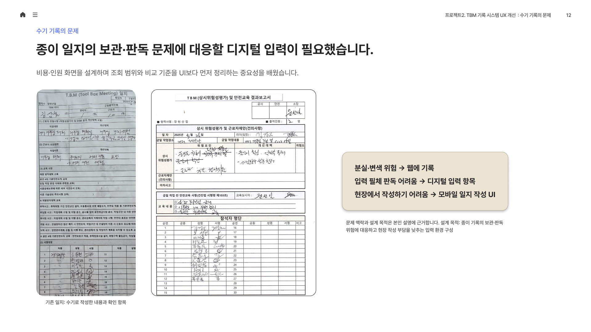
제목 종이 일지의 보관·판독 문제에 대응할 디지털 입력이 필요했습니다.
제목 아래 비용·인원 화면을 설계하며 조회 범위와 비교 기준을 UI보다 먼저 정리하는 중요성을 배웠습니다.
종이 일지의 보관과 판독 문제를 설계 과제로 삼았습니다.
종이 일지는 보관 중 분실·변색될 수 있고 손글씨를 읽기 어려울 수 있었습니다. 웹에는 기록을 입력하고 보관하는 구조를, 모바일에는 현장에서 작성하는 화면을 설계했습니다.
분실·변색 위험에 대응할 디지털 기록
손글씨 대신 내용을 입력하는 항목
모바일에서 일지를 작성하는 화면
작업일 · 작업 내용 · 위험 요인 · 확인 항목 · 참여자 서명
기존 일지 전체 2장을 줄이고 익명화된 핵심 항목만 확대한다. 오른쪽에 보관/판독/현장 작성 세 과제를 연결한다. HTML 초안은 식별 정보 대신 항목 요약을 사용한다.
종이 일지에서 그대로 유지한 항목과 바꾼 항목은 무엇인가요?
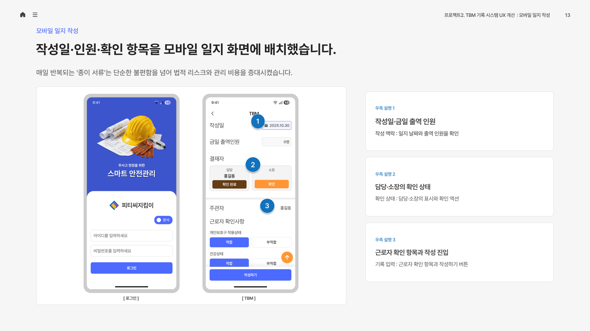
제목 작성일·인원·확인 항목을 모바일 일지 화면에 배치했습니다.
제목 아래 매일 반복되는 종이 서류는 단순한 불편함을 넘어 법적 리스크와 관리 비용을 증대시켰습니다.
작성일·출역 인원·확인 항목을 한 화면에 배치했습니다.
일지의 날짜와 출역 인원, 담당·소장 확인 상태, 근로자 확인 항목을 모바일 화면에 배치했습니다. 하단의 작성하기 버튼으로 다음 입력 단계에 진입하도록 구성했습니다.
작성일과 금일 출역 인원 확인
담당과 소장의 확인 표시 및 액션
근로자 확인 항목과 작성하기 버튼
로그인을 빼고 TBM 화면 1장을 크게 배치한다. 작성일/확인상태/작성하기 번호를 실제 요소와 맞춘다. 작성하기 이후 화면이 있으면 작은 다음 단계로 추가한다.
이 화면의 확인 상태와 일지 작성은 어떤 순서로 진행되나요?
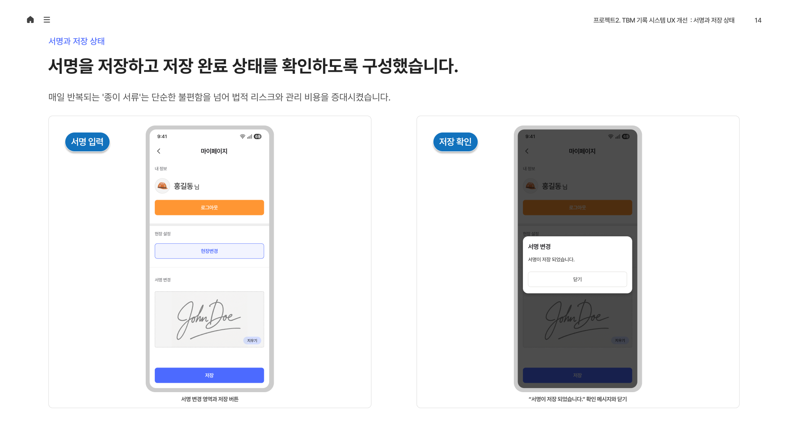
제목 서명을 저장하고 저장 완료 상태를 확인하도록 구성했습니다.
제목 아래 매일 반복되는 종이 서류는 단순한 불편함을 넘어 법적 리스크와 관리 비용을 증대시켰습니다.
서명 입력과 저장 완료를 구분해 보여줍니다.
마이페이지에서 서명을 입력하거나 변경하고 저장하도록 구성했습니다. 저장 후에는 완료 메시지를 표시해 처리 결과를 확인할 수 있게 했습니다.
서명 영역 · 지우기 · 저장 버튼
서명이 저장 되었습니다. 메시지 · 닫기 버튼
입력 → 저장 → 완료 메시지의 짧은 화살표를 추가한다. 두 UI는 같은 크기와 기준선. 각 설명은 1줄.
저장에 실패하거나 서명을 입력하지 않았을 때는 어떻게 처리하나요?
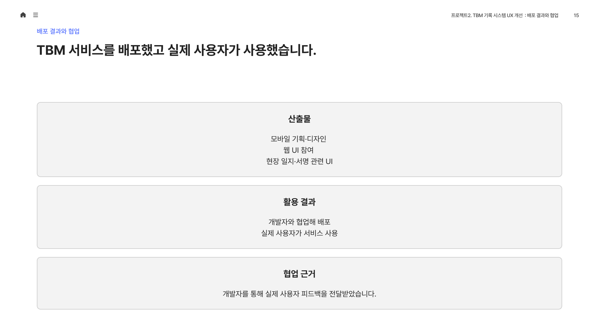
제목 TBM 서비스를 배포했고 실제 사용자가 사용했습니다.
제목 아래 제목 아래 설명문 없음
담당한 TBM 화면이 배포되어 실제 사용자가 이용했습니다.
모바일 기획·디자인과 웹 UI에 참여하고 개발자와 협업했습니다. 서비스는 배포 후 실제 사용자가 이용했으며, 사용자 의견은 개발자를 통해 전달받았습니다.
모바일 기획·디자인 웹 UI 참여 일지·서명 관련 화면
개발자와 협업한 서비스 배포 실제 사용자 이용
개발자를 통해 사용자 피드백 전달받음
산출물/활용 결과/의견 전달 경로 3열. 실제 요청 기록이 있으면 요청 → 본인 변경 → 확인으로 교체한다. 미확보 상태에서는 현재 사실 범위로 닫는다.
배포 후 어떤 사용자가 어떤 업무에 이용했으며 본인은 무엇을 확인했나요?
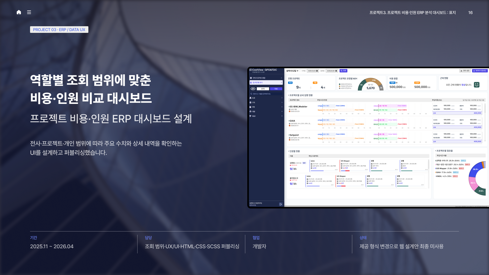
제목 역할별 조회 범위에 맞춘 비용·인원 비교 대시보드
제목 아래 전사·프로젝트·개인 범위에 따라 주요 수치와 상세 내역을 확인하는 UI를 설계하고 퍼블리싱했습니다.
조회 목적에 맞춘 비용·인원 대시보드를 설계했습니다.
전사·프로젝트·개인 범위에 따라 주요 수치와 상세 내역을 확인하는 UI를 설계하고 퍼블리싱했습니다. 제공 형식이 PDF로 변경되어 최종 웹 설계안은 사용되지 않았습니다.
2025.11–2026.04
조회 범위 · UX/UI · HTML·CSS·SCSS 퍼블리싱
개발자와 협업 PDF 제공으로 변경 · 웹 설계안 최종 미사용
왼쪽 제목·범위·상태, 오른쪽 전체 UI. 미사용 상태는 작은 각주에만 두지 않고 표지 설명에도 포함한다.
제공 방식이 바뀐 이유와 이후 활용된 산출물은 무엇인가요?
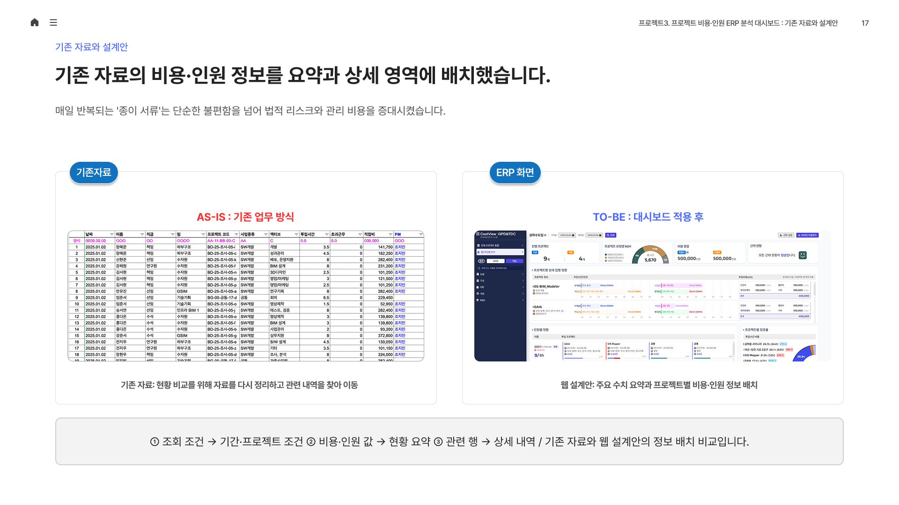
제목 기존 자료의 비용·인원 정보를 요약과 상세 영역에 배치했습니다.
제목 아래 매일 반복되는 종이 서류는 단순한 불편함을 넘어 법적 리스크와 관리 비용을 증대시켰습니다.
행 단위 업무 자료를 요약과 상세 정보로 나눴습니다.
기존 자료의 비용·인원 항목을 대시보드의 주요 수치와 프로젝트·인원별 상세 영역에 배치했습니다. 아래 비교는 기존 자료와 웹 설계안의 정보 배치를 보여줍니다.
날짜 · 이름 · 직급 · 팀 · 프로젝트 · 투입 시간 · 비용 등 행 단위 기록
조회 조건 → 주요 수치 요약 → 프로젝트·인원별 상세
기존 자료와 웹 설계안의 구조 비교 최종 웹 설계안은 미사용
익명화된 원자료와 설계안을 같은 크기로 비교. 화면 내부에 ①조회 조건 ②요약 ③상세를 붙인다. HTML 초안은 원자료 필드 요약을 사용한다.
요약에 올린 수치와 상세로 내린 정보를 어떻게 구분했나요?
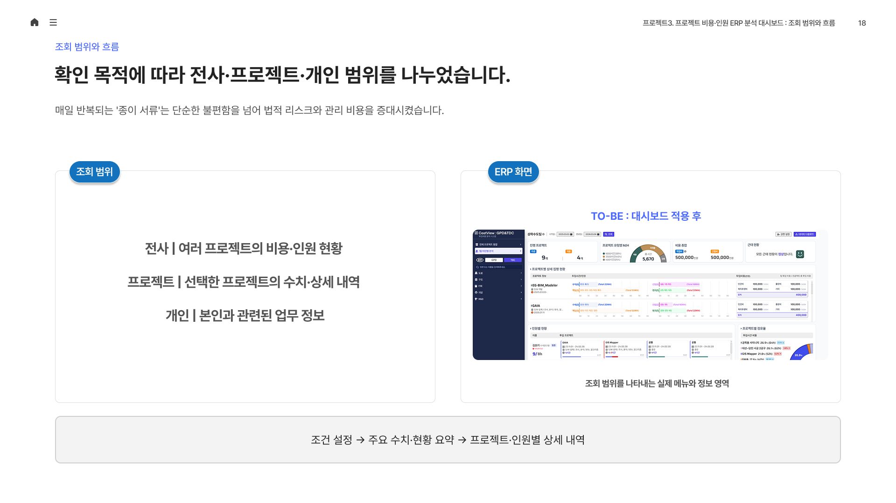
제목 확인 목적에 따라 전사·프로젝트·개인 범위를 나누었습니다.
제목 아래 매일 반복되는 종이 서류는 단순한 불편함을 넘어 법적 리스크와 관리 비용을 증대시켰습니다.
전사·프로젝트·개인으로 조회 목적을 나눴습니다.
여러 프로젝트의 현황, 특정 프로젝트의 상세, 본인과 관련된 업무를 구분했습니다. 조회 조건을 정한 뒤 주요 수치와 상세 내역을 확인하는 순서로 구성했습니다.
여러 프로젝트의 비용·인원 현황
선택한 프로젝트의 수치와 상세 내역
본인과 관련된 업무 정보
조건 설정 → 주요 수치·현황 요약 → 프로젝트·인원별 상세
왼쪽 조회 목적 3행, 오른쪽 실제 메뉴 부분 확대. 하단 흐름 3단계. 범위별 실제 화면이 없으면 개념 설명과 현재 화면을 구분한다.
조회 범위가 바뀌면 어떤 정보와 조건이 달라지나요?
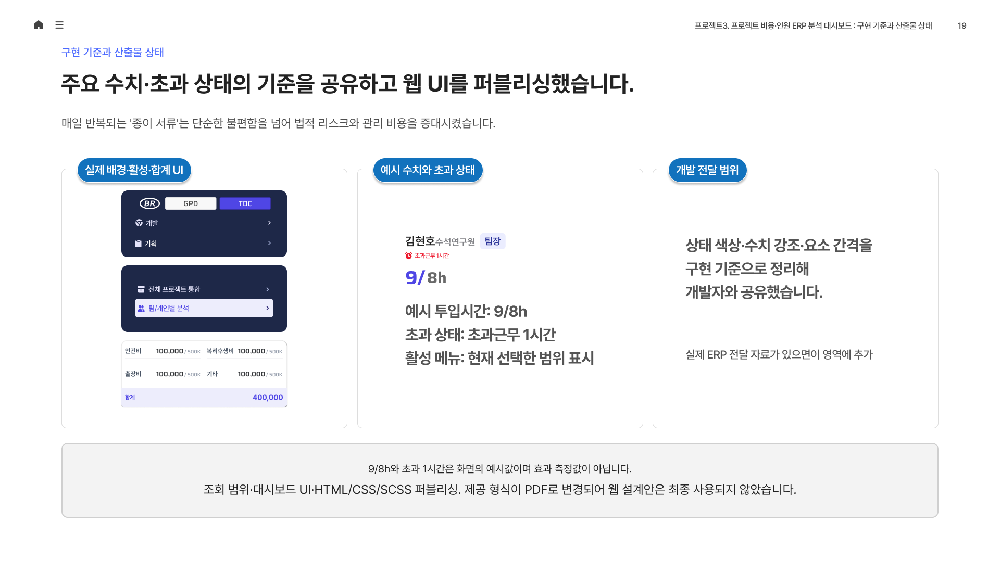
제목 주요 수치·초과 상태의 기준을 공유하고 웹 UI를 퍼블리싱했습니다.
제목 아래 매일 반복되는 종이 서류는 단순한 불편함을 넘어 법적 리스크와 관리 비용을 증대시켰습니다.
활성 메뉴·합계·초과 상태를 구분해 구현 기준을 정리했습니다.
현재 조회 범위와 합계, 기준을 넘은 투입 시간을 구분하도록 UI를 설계했습니다. 상태 색상과 수치 강조, 요소 간격을 개발자와 공유하고 웹 화면을 퍼블리싱했습니다.
선택한 조회 범위를 강조 비용 항목과 합계를 구분
투입 시간 9/8h 초과근무 1시간 표시
상태 색상 · 수치 강조 · 요소 간격 공유 HTML·CSS·SCSS 퍼블리싱 최종 웹 설계안 미사용
실제 메뉴/합계 부분 확대 + 수치 예시 + 전달 범위 3열. 하단에는 예시값과 최종 미사용 상태를 한 줄씩 적는다.
초과 상태와 합계 표시에 대해 개발자에게 어떤 기준을 전달했나요?
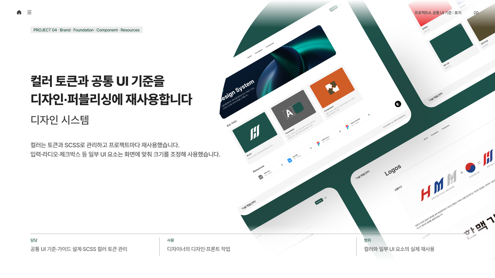
제목 컬러 토큰과 공통 UI 기준을 디자인·퍼블리싱에 재사용했습니다.
제목 아래 컬러는 토큰과 SCSS로 관리하고 프로젝트마다 재사용했습니다. 입력·라디오·체크박스 등 일부 UI 요소는 화면에 맞춰 크기를 조정해 사용했습니다.
컬러 토큰과 공통 UI 기준을 디자인·퍼블리싱에 재사용했습니다.
컬러를 토큰과 SCSS로 관리해 프로젝트마다 사용했습니다. 입력·라디오·체크박스 등 일부 UI 요소는 화면에 맞춰 크기를 조정해 사용하고, 웹 가이드로 정리했습니다.
공통 UI 기준 · 가이드 설계 · SCSS 컬러 토큰 관리
디자이너의 디자인·프론트 작업
컬러와 일부 UI 요소
웹 가이드 홈을 정면 배치. 왼쪽에 정의/실제 사용/범위. 표지 하단에는 확인된 담당과 사용 범위만 넣는다.
공통으로 재사용한 기준과 프로젝트마다 바꾼 부분은 무엇인가요?
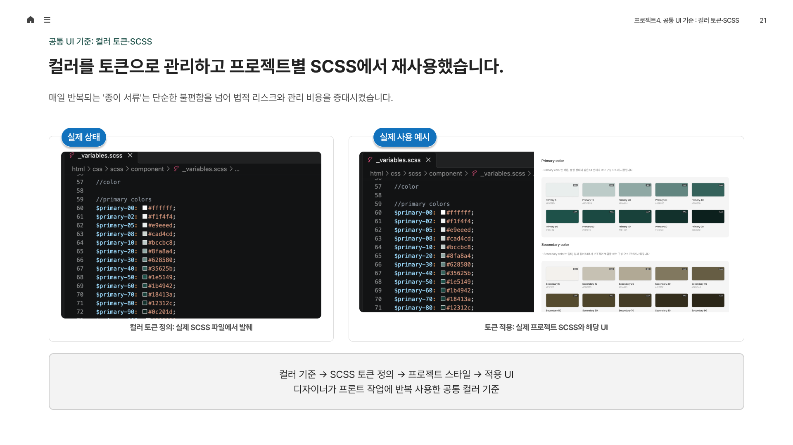
제목 컬러를 토큰으로 관리하고 프로젝트별 SCSS에서 재사용했습니다.
제목 아래 매일 반복되는 종이 서류는 단순한 불편함을 넘어 법적 리스크와 관리 비용을 증대시켰습니다.
컬러 값을 SCSS 토큰으로 정리했습니다.
공통 컬러 값을 SCSS 변수로 정의하고 웹 가이드에 같은 색상 기준을 정리했습니다. 컬러 토큰은 프로젝트의 디자인·프론트 작업에서 반복 사용했습니다.
_variables.scss의 컬러 변수 정의
Primary·Secondary 색상 단계 정리
디자이너의 프로젝트 디자인·프론트 작업
왼쪽 SCSS 정의, 오른쪽 컬러 가이드. 세 번째 실제 스타일 참조 자료가 있으면 3단계로 확장한다. 동일 코드를 두 번 넣지 않는다.
어떤 스타일에서 어떤 컬러 변수를 참조했나요?
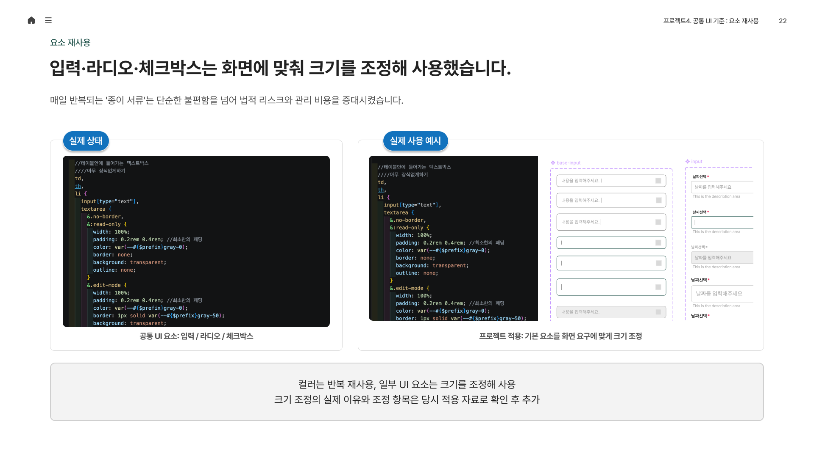
제목 입력·라디오·체크박스는 화면에 맞춰 크기를 조정해 사용했습니다.
제목 아래 매일 반복되는 종이 서류는 단순한 불편함을 넘어 법적 리스크와 관리 비용을 증대시켰습니다.
공통 입력 UI의 상태와 스타일을 정리했습니다.
입력 UI의 상태 예시와 읽기 전용·편집 상태의 스타일을 정리했습니다. 일부 요소를 크기 조정해 사용한 경험은 실제 프로젝트 적용 자료와 함께 설명할 수 있습니다.
테이블·목록 안의 입력·텍스트 영역 스타일 읽기 전용 · 편집 상태 정의
기본 입력과 라벨·설명문이 있는 입력 예시
입력·라디오·체크박스 일부 요소의 크기를 조정해 사용
입력 상태 가이드 60%, 관련 SCSS 40%. 적용 자료가 확보되면 기본/변형 두 UI와 실제 변경 치수 하나를 같은 기준으로 비교한다.
기본 요소에서 무엇을 얼마나 바꿨고 그 이유는 무엇인가요?
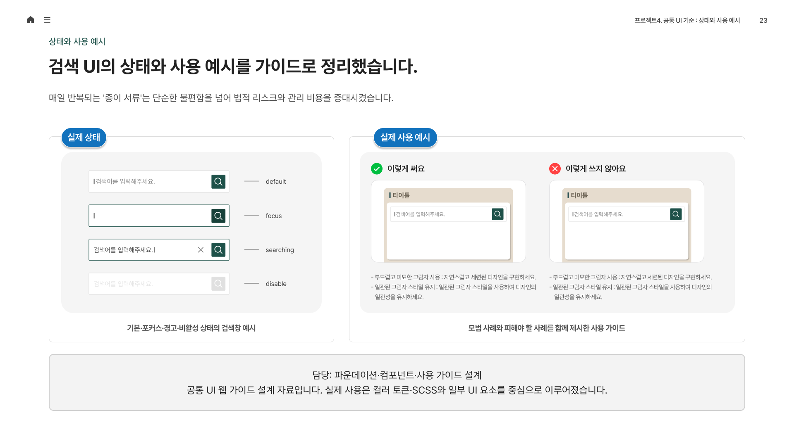
제목 검색 UI의 상태와 사용 예시를 가이드로 정리했습니다.
제목 아래 매일 반복되는 종이 서류는 단순한 불편함을 넘어 법적 리스크와 관리 비용을 증대시켰습니다.
검색 입력의 상태와 배치 예시를 정리했습니다.
기본·포커스·입력 중·비활성 상태를 구분하고 검색 입력의 배치 예시를 웹 가이드에 정리했습니다. 상태 이름과 예시 설명을 실제 화면에 맞춰 작성했습니다.
기본 · 포커스 · 입력 중 · 비활성
검색 입력의 상태별 모양 검색창을 화면 안에 배치하는 예시
파운데이션 · 컴포넌트 · 사용 가이드 설계
왼쪽 상태 4개, 오른쪽 검색 입력 배치 예시 1개. 그림자 지침은 실제 차이가 보이는 새 예시와 이유가 있을 때 추가한다.
입력 중과 검색 처리 중은 어떤 상태 차이가 있나요?
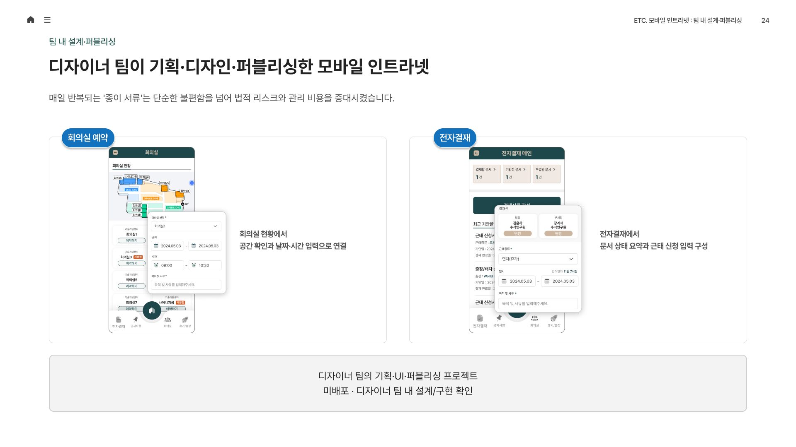
제목 디자이너 팀이 기획·디자인·퍼블리싱한 모바일 인트라넷
제목 아래 제목 아래 설명문 없음
회의실 예약과 근태 신청을 모바일 화면으로 설계했습니다.
디자이너 팀에서 모바일 인트라넷의 기획·UI·퍼블리싱에 참여했습니다. 회의실 현황에서 예약으로, 전자결재 현황에서 근태 신청으로 이어지는 화면을 구성했습니다.
공간 현황 확인 → 예약일·시간·목적 입력
문서 상태 확인 → 근태 종류·일자·사유 입력
미배포 · 디자이너 팀 내부 설계·구현 확인
회의실 현황→입력 / 전자결재 현황→근태 입력의 2개 흐름. 4개 화면을 평면으로 배치하되 핵심 부분만 확대한다.
팀 작업 중 본인이 만든 화면과 팀원이 만든 화면은 어떻게 나뉘나요?
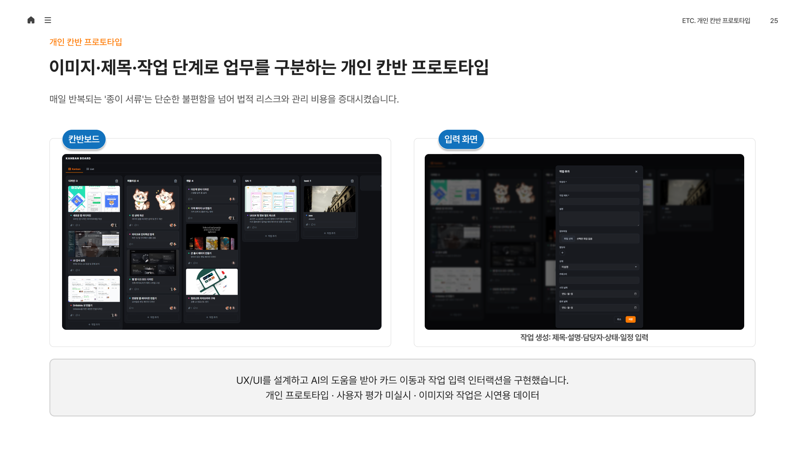
제목 이미지·제목·작업 단계로 업무를 구분하는 개인 칸반 프로토타입
제목 아래 매일 반복되는 종이 서류는 단순한 불편함을 넘어 법적 리스크와 관리 비용을 증대시켰습니다.
카드 이동과 작업 생성을 구현한 개인 칸반 프로토타입
이미지와 제목으로 작업을 구분하는 보드 UI를 설계했습니다. AI의 도움을 받아 카드 이동과 작업 입력을 구현했으며, 실제 사용자 평가는 진행하지 않았습니다.
카드의 이미지·제목으로 작업 구분 카드 이동 인터랙션 구현
제목 · 설명 · 담당자 · 상태 · 일정 입력
개인 UX/UI 설계 · AI 보조 구현 시연 데이터 사용 · 사용자 평가 미실시
보드 전체를 크게 쓰기보다 의미 있는 카드 2–3개와 작업 생성 모달을 확대한다. 제목·담당·상태·일정이 같은 시연 작업으로 연결되게 한다.
AI가 작성한 코드에서 본인이 결정하고 직접 확인한 부분은 무엇인가요?
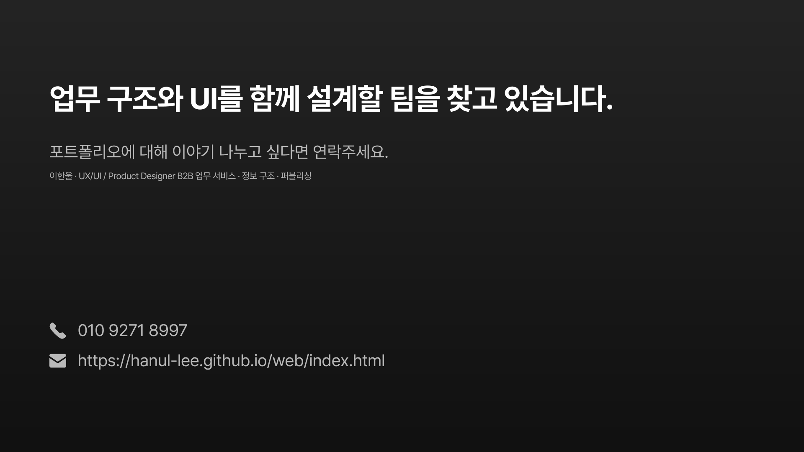
제목 업무 구조와 UI를 함께 설계할 팀을 찾고 있습니다.
제목 아래 포트폴리오에 대해 이야기 나누고 싶다면 연락주세요.
업무 구조와 UI를 함께 설계할 팀을 찾고 있습니다.
B2B 업무 서비스의 정보 구조·UX/UI·퍼블리싱 경험을 바탕으로 제품의 사용 흐름을 함께 만들고 싶습니다. 프로젝트의 담당 범위와 설계 과정은 면접에서 자세히 말씀드리겠습니다.
UX/UI · Product Designer
hanul.designer@gmail.com
010-9271-8997
https://hanul-lee.github.io/web/index.html
제목 2줄 이내, 소개 2줄. 이메일을 먼저 크게 배치하고 전화/웹을 그 아래. 실제 링크를 걸고 아이콘은 의미에 맞춘다.
다음 팀에서 가장 맡고 싶은 제품 문제는 무엇인가요?
원본 26쪽은 모두 직접 확인했습니다. 폴더의 원본을 보존하고 복사본의 SHA-256을 대조했습니다. 수정 HTML의 페이지·이미지·링크·글자 넘침 점검은 validation.json에 기록합니다. 원본 디자인 수정, 실제 사용자 테스트, 최종 제출 PDF 점검은 별도의 작업입니다.
제출본을 편집할 때 검토 이유와 면접 질문은 참고만 하고 교체 원고와 증거 화면을 사용하세요. 원자료 보강·익명화·날짜 확인·시연 데이터 재캡처가 필요한 쪽은 페이지별 메모를 확인하세요.